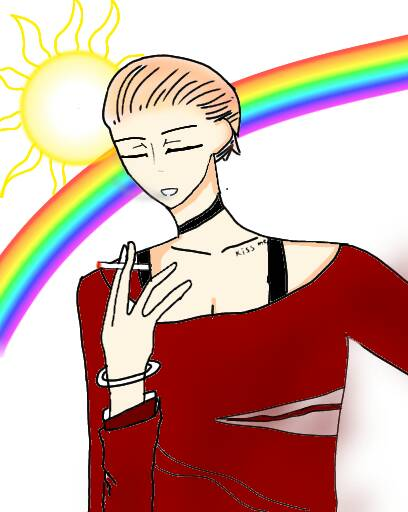

太陽 The Sun
元素火
對應牌1魔術師
對應星座太陽
牌義太陽是生命光明面的展現，如日中天，就像回到無憂無慮的童年，牌面上的太陽光芒萬丈，
是一種自信的展現，裸身的小孩代表純真無邪，他身後的彩虹連接天堂和人間，象徵夢想的實現，
他背後的天使，代表太陽狀態所受到的祝福如同天佑一般，水池是內心平靜的代表，小孩身上的披風代表獲勝，
得到祝福，太陽是人間的勝利，太陽所到之處，是充滿光明的“自信心”。
關鍵語成功、自信、理想、歡樂★暗示享有歡樂、內在的平和、以及表達自我的需求
牌正面在各個領域都擁有快樂和成就，獲得支持。
牌反面自信薄弱，害怕不足，對人生和創造性抱著競爭的態度，自尊受損。
太陽牌其實很好理解，既然是萬物能量的來源，當我們抽到這張牌的時候，也會充滿著正面的能量，
不管遇到什麼面向的問題(愛情、工作、生活等)，基本上都可以順利解決，或是達成目標。
比較需要注意的地方為：觀察太陽牌出現的在「牌陣中的哪個位置」，以下舉例 : 二擇一牌陣 (共5張牌)
若「當事人想法/狀況」的位置抽到的是太陽牌，那麼代表問卜者抱持著樂觀的角度去看 A或B選項未來的發展，
此時的太陽代表當事人樂觀的態度或是迫不急待想躍躍欲試的狀態，但若此牌陣的「A未來」與「B未來」兩個位置都沒有抽到牌面較佳的牌，
那就代表這張太陽牌的成功只“反映在當事人主觀感受上，而非事實情況”，簡單來說就是有過度樂觀的傾向。 (如圖一)
同理若太陽牌出現的位置在「A未來」或「B未來」的位置上，那才能代表此選項的最後結果是順利且成功的。 (如圖二)
最後值得一提的是「太陽牌逆位」該如何解釋，常見的逆位解釋是『正位解釋的反義詞』，或是『變得更極端』，
但太陽牌逆位就不適合用這種方式解讀了，假設正位的太陽牌有100分的能量，那麼逆位的太陽牌至少還有70分以上的能量，
也就是說逆位的時候只是削弱一些能量，而不是解釋為失敗或沮喪等負面形容詞，你可以把正位的太陽想像成正中午時候的模樣，而逆位的太陽牌大約是下午3-4點鐘時候的狀態。
離開卡牌